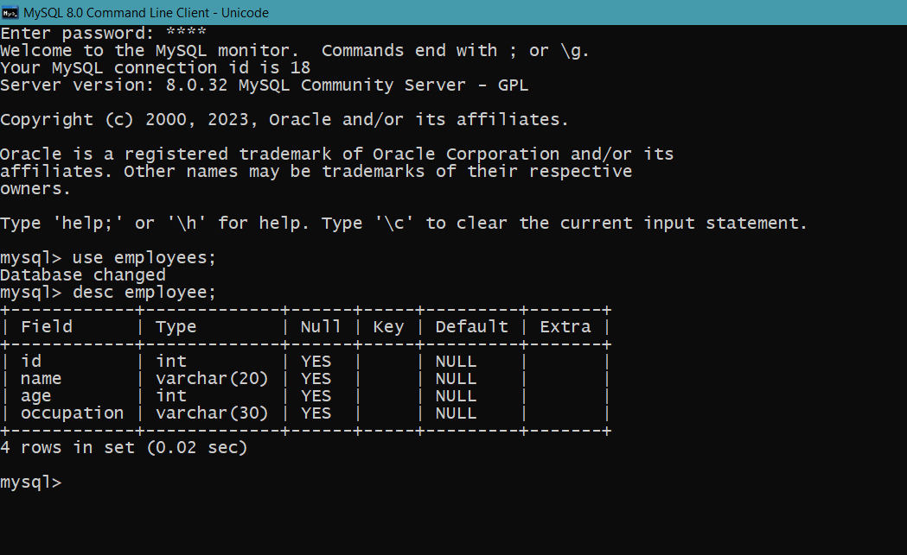

MySQL query
1.How we can see existing database in mysql.

2.How we can create database.

3.How we can delete a database.

4.How we can use an existing database.

5.How we can create table in the database.

6.How we can see the structure of existing table.

7.How we can delete a table.

8.How we can insert data in the table.

9.How we can delete all the data of the table.

10.To delete all the rows from the table we can use a DDL command also.